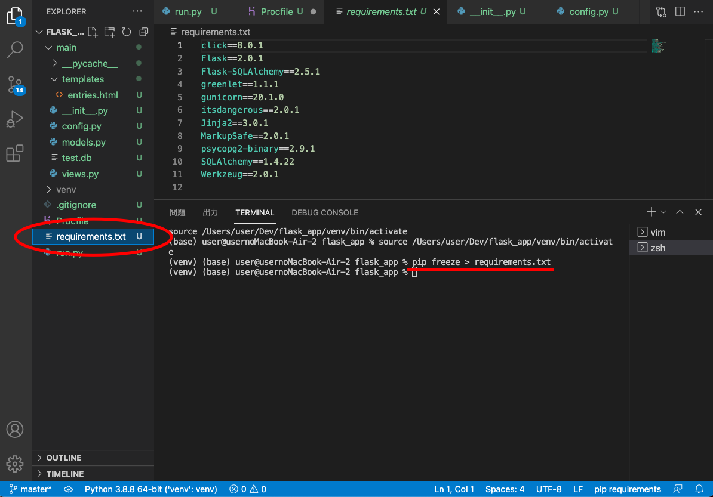

2021/08/16
ここでは作ったアプリケーションをherokuにつなげる作業を行う。
＊Macの場合
何度やってもエラーばかりでGitに繋げられなかったので後で繋げることにします。
もう一度最初から構築したpythonファイルをやり直したがうまくいかなかったので保留。
herokuとは、アプリケーション開発に必要なものが1つにまとまっている環境のことです。
これにつなげるとぜんぶうまくいく！
①heroku連携前の下準備
pip install gunicorn
pip install psycopg2-binary
②Profileの準備
vim Profile
そうするとprofileのファイルが作られるので、これをrenameで拡張子なしのProfileにする。
③Profileに書き込む
web: gunicorn run:app --log-file -
④requirements.txtというファイルを作る
ターミナルで操作
pip freeze > requirements.txt
これを頼りにherokuが必要なライブラリをインストールする。

⑤herokuでアカウント登録をする
こちらから各種設定を行ってください。
今回はapp名は donation to a person の略でdtpappとしました。
⑥Heroku Postgres アドオンを追加
インターネット側でのデータベース管理に、Herokuのアドオン機能であるHeroku Postgresを使う。
こちらから設定を行ってください。。
できるとこの画面になる
いい加減gitのエラーが出るのやめて欲しいです。
早急にgitに繋げられます様に。。。